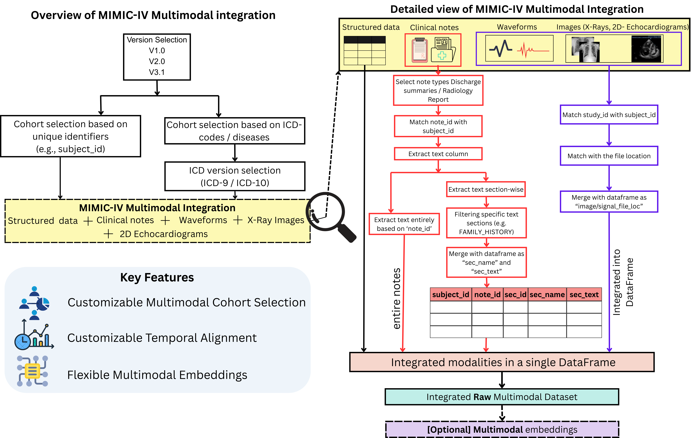
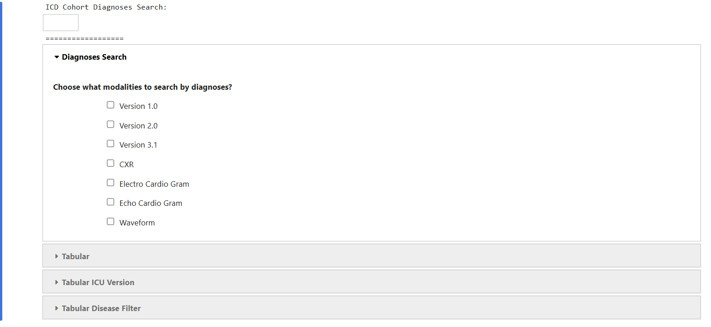
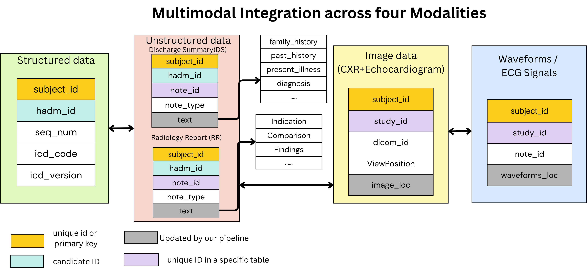
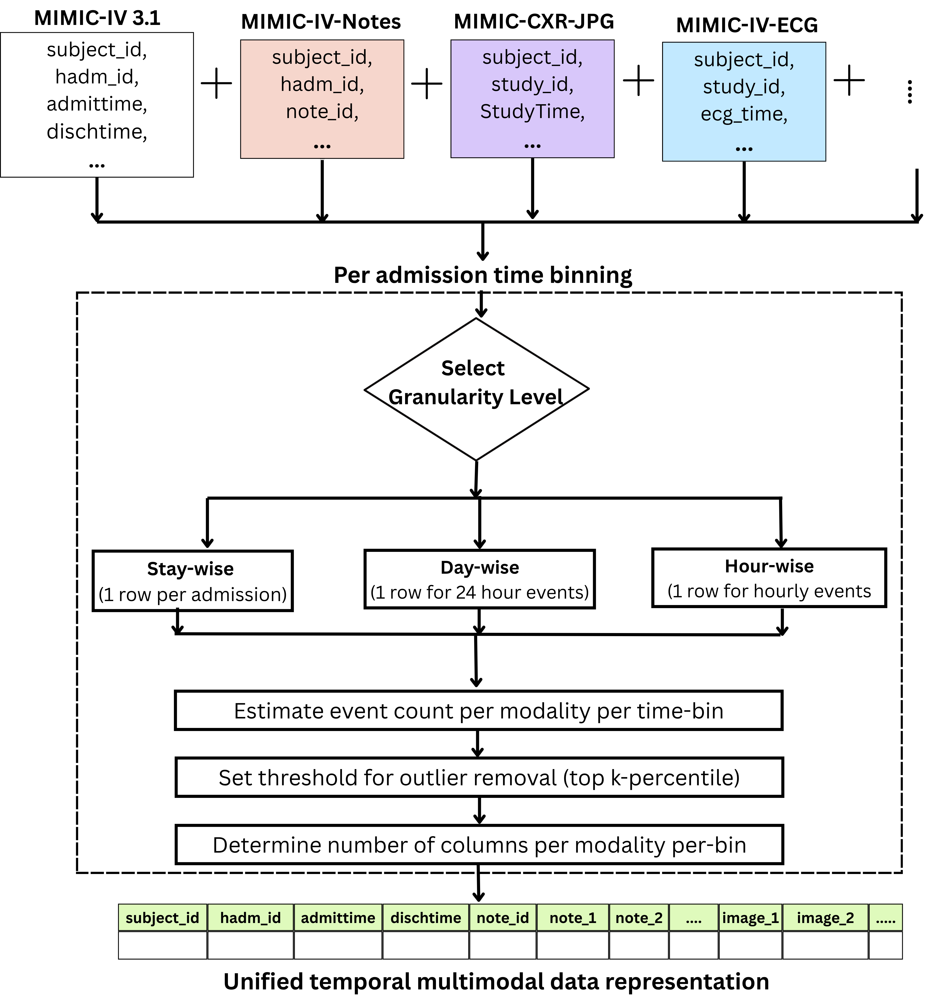
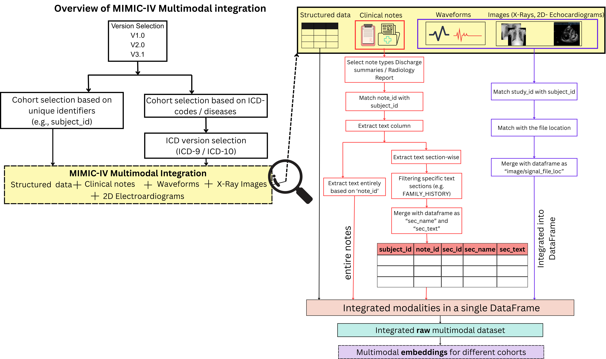

I helped build the new release of the MIMIC-IV Data Pipeline, an open-source project with over 300 stars used by clinical ML researchers. The pipeline takes raw MIMIC-IV hospital data through cleaning, preprocessing, model training, and evaluation in one place, so researchers can generate and download models trained on consistently preprocessed data without rebuilding the workflow themselves.

Data cleaning and cohort building
The pipeline starts with customizable data extraction from MIMIC-IV. Users select modalities, filter by ICD codes or disease name, remove outliers, impute missing values, and group clinical features using standard coding systems. Each step is configurable and recorded for reproducibility, so a researcher can define a personalized patient cohort and rerun the exact same preprocessing later.

Multimodal integration
The new release extends the original pipeline to five modalities: structured EHR data (vitals, labs, medications), clinical notes, waveforms, chest X-rays, and echocardiograms. Previously these lived in separate stores and required manual alignment. The pipeline connects them through a shared preprocessing framework so multimodal cohorts are ready for downstream modeling.

Temporal alignment
Sequential clinical data is binned into equal-length time intervals and filtered by time-series length according to user preference. This produces smooth, aligned time-series datasets that sequential models can consume directly.

Automatic model training and evaluation
After preprocessing, the pipeline handles model creation, training, and testing on the selected cohort. It includes commonly used sequential architectures (including BEHRT and BERT-based models), saves checkpoints, and runs standard evaluation with optional fairness reporting. Researchers get preprocessed data and a trained model from the same notebook workflow.

The goal is to lower the barrier for other researchers: pick your cohort, preprocess, train, and export.
Everything runs through mainPipeline.ipynb as a step-by-step wizard, with standalone modules
for evaluation and fairness when you only need those pieces.